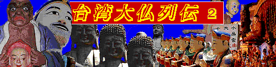

麻豆代天府/台南縣麻豆鎮
台南市街より車で約40分。台南縣麻豆鎮（縣は県、鎮は町と考えていただけたら宜しい、ちなみに郷は村といったところか）は文旦の産地として有名だ。
その文旦畑の中を走っていくと突然巨大な寺が現れる。麻豆代天府である。
代天府というのは勉強不足で良く分からないのだが本尊が5人の王なので、道教寺院の一種なのだろうか。
門を潜りだだっ広い駐車場のような広場にでると正面に前殿（拝殿）、その後ろに主殿（本堂）が控えている。前殿の左右に鐘楼塔、さらにその左には信徒会館があり、この寺の規模の大きさを物語っているようだ。
その広場の左側に上記の建物から離れてぽつんと玉子型の変な建物が建っている。観音堂だ。
内部には4〜５メートル程の観音像が祀られ、それを囲むように電燭ブッダタワーが林立していて何かブレードランナーみたいでかっこいいぞ。
で、前殿、主殿を経てここの最大の名所、「巨龍」エリアに足を踏み入れてみよう。
でかい。でかい〜！
龍が池の中でのたうちまわっている。高さは38メートル、長さは54メートル（のたうちまわっているが、実際の長さは200メートルだそうで）胴の太さは5メートルという恐ろしいサイズの龍なのだ。完成は1982年。この龍を中心に地下の十八地獄、地上の天堂（龍の胎内くぐり）、水中の水晶宮と3つのお楽しみが用意されている。
チケットを購入し、早速、十八地獄からいってみよう。入口で昼寝していた、やる気のないおっさんにチケットを渡し、暗い階段を下りて行くと何処かでカチッとセンサーのスイッチが入る音がした。まさかアレでは・・・
・・・おおおッ、やはり電動ジオラマ地獄界の登場ナリ！
南天宮の十八地獄で見た電動ジオラマ地獄、それをさらに規模的にバージョンアップさせたものだった。
人形の大きさは等身大。しかも十八地獄のうたい文句通りきっちり18のステージがある。それら全て入場者が近付くとセンサーで感知し、一大地獄ショーが始まるという寸法になっている。
ショーの内容はほとんど同じ。中国語なので台詞の部分は想像ですが、多分、こんなもんでしょう。
閻魔大王「お前は生前に人を殺めただろう！」
被告「アイヤー、とんでもないアル。」
閻魔大王「隠しだてしても、ここに証拠があるぞ！」
被告「アイヤー、とんでもないよあるよないよ」
閻魔大王「どっちだか紛らわしい奴だ！めんどくさい！有罪！」
・・・実際は被告がもう少し粘ってあの手この手で閻魔様に挑むのだが結局最後は有罪判決。
で、そこからは各地獄、オリジナリティに溢れた責め技を披露してくれる。
それにしても地獄に道路工事用の車両があるとは思わなかった。
この地獄、特筆すべきはその演出の細かさと動きの大胆さ。責められている人が今風な服装なのがリアリズムですなあ。で、臼に逆さに突っ込まれた人なんかはそのままぐるぐる廻されてました。ヒエ〜。
てなわけで十八地獄は終了。階段を登り地上に出ると間髪を入れず龍の尻尾の部分に。いよいよ巨龍の胎内ウォークだ。お次は天堂、いわゆる極楽界ですな。
ここでもまたやる気のないおっさんにチケットを渡し、中に入る。最初は壁に仏様や神様のレリーフが居並ぶ通路。しかしスーツを着たサラリーマンが合間に混ざっているのが油断できない。
で、最初のアトラクション。美女がずらりと並んだウェルカムコーナー。もちろん電動で御挨拶、と、同時に耳をつんざくような爆音で中華ミュージックが。ちゃ〜らりらんらんちゃ〜らら〜なるサウンドが流れる中、次から次へと電動ジオラマが登場する。
ここのジオラマはず〜っと宴会シーン。
美女の舞あり、うまいもの食い放題シーンあり、白木屋なんかじゃ絶対見られないすんごい贅沢な宴会シーンを再現している。
あまりの暑さとウルサさと人形のポンチな動きにだんだん気が遠くなっていく。もはやお寺にいる事などとっくに忘れていた。浦島太郎が何故300年も竜宮城にいたのかチョット判ったような気がしたワタシでした。
徐々に階段を登っていくといつの間にか龍の頭の部分に至っている。そこは地上30メートルの龍の口の中だ。そこからのビュー。
で、口からは一気に地上まで階段が延びている。下りてから気が付いたが、この階段、龍の吐く水だったのね。
で、最後に待つのは水晶宮、ネーミングからも察せられるがここは入口と出口が水上に出ている龍の口なのだが、胴体は無い。つまり胴体部分は水中でそこを歩いて、水中世界を楽しもう、という趣向なのだ。エクセレント！橋を渡ってあんぐり開いた龍の口へチケットを持って向かう。今度はやる気のないおばはんだった・・・
で、口の中に入るとすぐ階段。いきなり水中世界へ突入する。そこは・・・
・・・地下の十八地獄、天上の天堂、いずれも物凄いイマジネーションの宝庫だったが、それらが霞む程水中の水晶宮は凄い。水槽に本物の魚が入っていてその水槽越しに電動ジオラマがうごめいているのである。
写真では分かりにくいとは思うが実際もこんなもんである。水が濁っていて余計想像力を刺激されるところがニクイ。
各ブースとも中華王宮風インテリアに魚貝類の王様というとんでもない代物である。
カニ頭の王様とかヒラメ頭の王様とか・・・これを作った人の発想がとことん読めない。私も変なモノはよく見て来たつもりだが、ここまで異様な世界観を誇示されたのは初めてである。完全にメロメロになりました。

その他園内、もとい境内には二重螺旋の展望塔や謎のコンクリ像があり、なかなか油断できない。
ハイテク技術と歪んだ世界観が見事に融合したマッド脳内遊園地。
台湾を訪れるすべての方、すばらしき必見スポットですぞ！
お土産で買った絵葉書より
次のスポットへGO!
台湾大仏列伝2のページへ
珍寺大道場 HOME